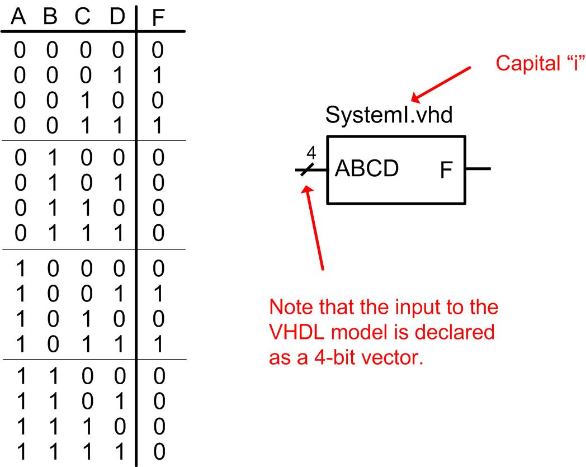

HW 8.2 - Conditional Programming Constructs
______________________________________________________________________
Problem 8.2.1
Design a VHDL model to implement the behavior described by the 4-input truth table shown below. Use a process and an if/then statement. Use std_logic and std_logic_vector types for your signals. We haven't covered these types yet, but for this assignment just assume they act the same as bit and bit_vector. Declare the entity to match the block diagram provided. Hint: Notice that there are far more input codes producing F=0 than producing F=1. Can you use this to your advantage to make your VHDL model simpler?

Deliverables: Simulate your model using ModelSim. You are to upload your VHDL design file (SystemI.vhd) and a screenshot of your simulation waveforms (name it waveform_8_2_1.jpg) showing the output for all possible input codes to the DropBox. The test bench is provided below.
SystemI_TB.vhd (right click and select "save link as")